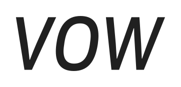

知っている英語を、
話せる英語へ。
会話の前に、自分の言葉を試せる場所。
言葉の組版、紙の温かさ、発話を示す引用符を
アイコンと LP に通わせる。
声になる引用符
図形は構成案。完成ロゴではありません。
From knowing it
to saying it.
紙、インク、ひとつの青。
装飾を足す前に、色と形で揃える。紙 · #F6F3EC
インク · #242923
コバルト · #3358D4
薄い青 · #E8EDFC
16 / 32 / 60 px
構成の比較用
構成の比較用
LP は、ひとつの会話から。
冒頭の構成見本 · 公開ページではありませんiPhone & iPad
会議が終わりそう。
でも、締め切りの話がまだ出ていない。
あなたなら、どう切り出す？
例文を見る
“Before we finish,
can I bring up
the deadline?”
bring up — 話題に出す
次は、自分の言葉で。
場面を思い浮かべる。どこで使うかから始める。
自分の言葉で返してみる。答えを見る前に、一度声に出す。
確かめて、また使う。例文と比べ、時間を置いて練習する。
Wellmade から取り入れること
Run Receipt の使い道につながる形、Sticky Notes の一色と手触り、Starch Living の文字と素材の関係。Vow では「発話するひとこと」を中心に、同じ要素を各媒体へ展開する。
次の制作で詰めること
引用符の輪郭と小サイズでの識別性。LP の続きで使う実際の練習画面。青の面積と余白の調整。この見本は新しいブランドの関係性を確かめるためのものです。